| Overview: Message Center is the screen that each physician/provider will see immediately upon logging into the system. It contains the Inbox where providers can view and respond to messages, co-sign orders and sign documents. Messages may be sent from the Message Center or from within a patient’s chart. |
Opening and Reviewing Inbox Items in Message Center |
Complete the following steps to open an Inbox item: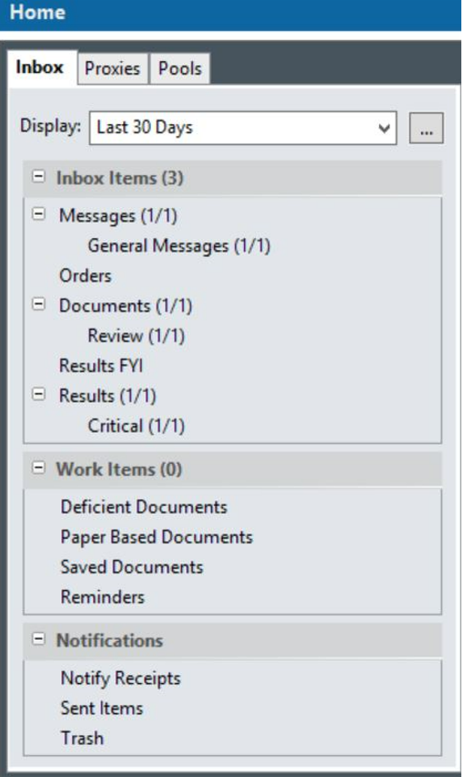
- In the Inbox Summary, click an Inbox folder, such as General Message or Results or a subfolder, such as Critical. A list of notifications from that category is displayed in the Inbox workspace.
NOTE: You can select multiple messages in the messages list by selecting the first one, pressing SHIFT, and selecting the last one. You can open selected messages by selecting a single message and holding down CTRL as you select others.
- The selected message will be displayed highlighted in blue on the left and the details will display on the right side of the screen.
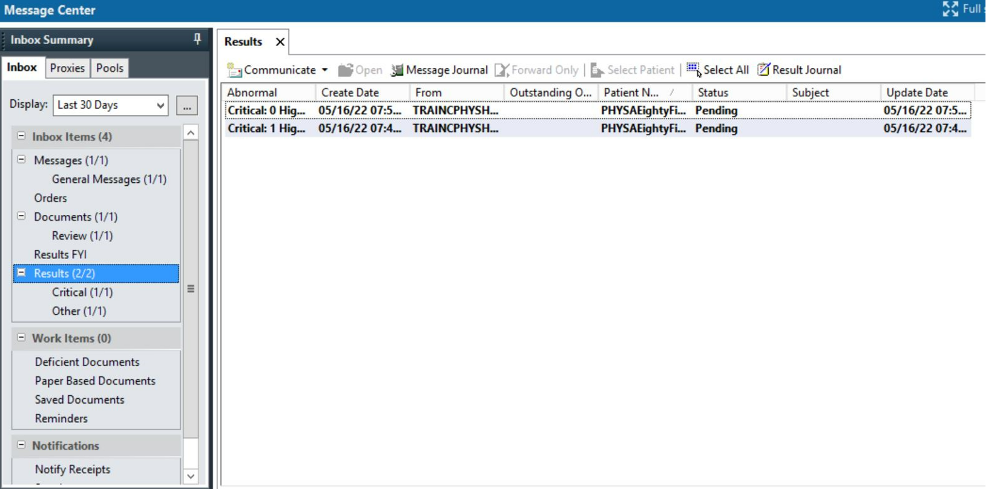
- If there are any attachments included. Click on the link to open the document and review the information.
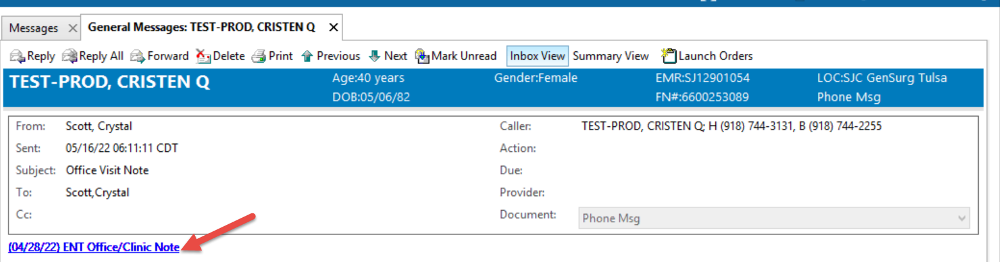
- Click Reply to reply only to the sender or Reply All to reply to the sender and all recipients of the message.
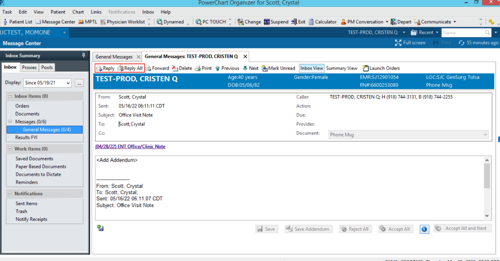
- Compose the message.
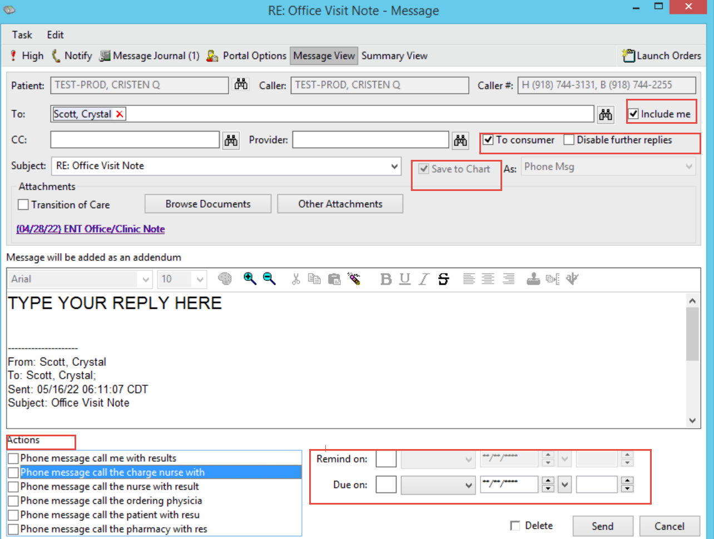
- Select any Additional Message Center Options.
- If the existing Message should be deleted once sent, select the Delete check box.
Approving, Forwarding and Refusing Orders in Message Center |
NOTE: In the Message Center, you can select all Orders and Forward, Approve or Refuse those orders.
- In the Message Center, click on Orders on the left of the screen.
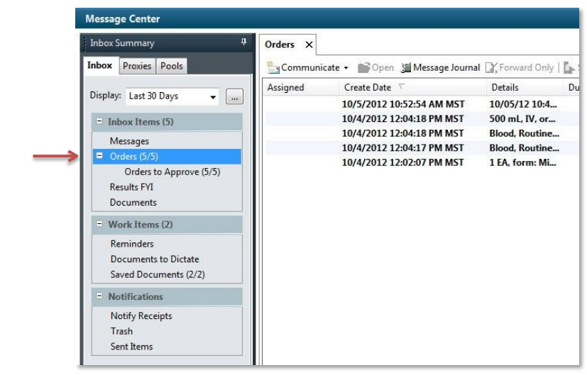
- To select all Orders – click the Select All button on the Orders Toolbar.
- With all of the orders selected (highlighted in blue), right click in the blue area and choose an action Forward Only, Approve (no dose range checking) or Refuse.
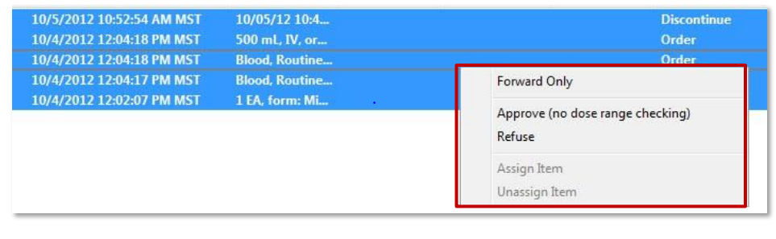
Additional Information for Refusing Orders in Message Center |
- To refuse a single order, right click on the order in the Message Center and choose Refuse from the drop down list.
- In the Refuse window, choose the appropriate reason for refusing to sign the order.
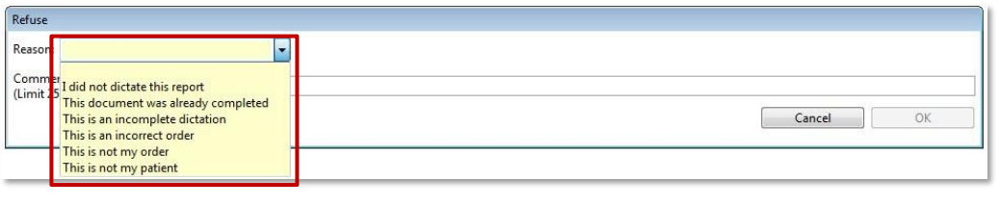
- You can also add additional text about the refusal in the Comments section. Click OK to send the refusal to the HIM Refusal Inbox
Signing and Co-signing Documents in Message Center |
- Double click on the message to open the document.
- Select the Modify icon on the message toolbar
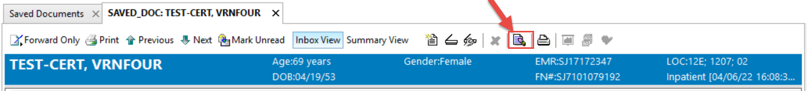
- Your document will open up and you are able to modify its contents.
IMPORTANT: You are able to type contents within the fields under the selected heading within your document.
- Once you complete your document, select the sign and submit button at the bottom right of the document.
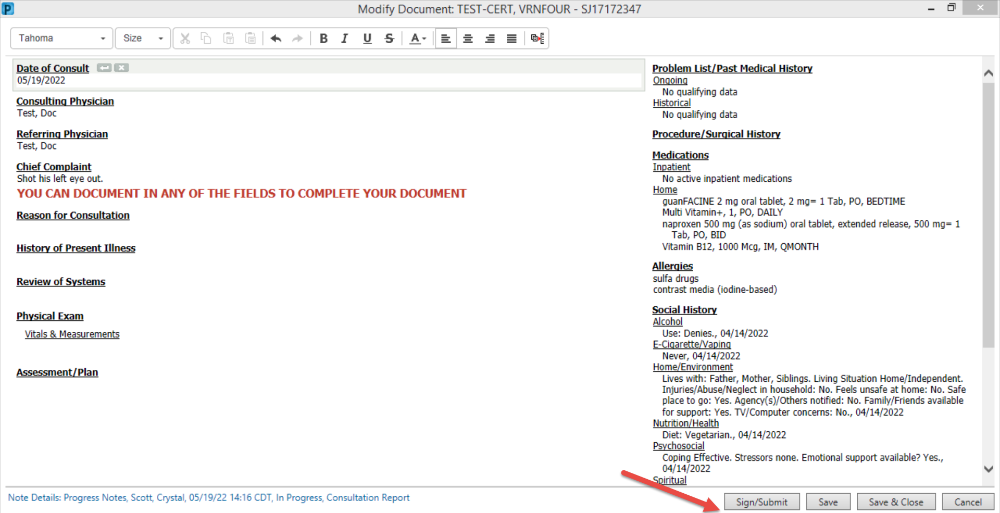
- When in the Message Center, you also have the option to forward your document to another provider for them to review or sign.
- In the message at the bottom of the screen you will see the Action Pane. The system automatically selects sign.
- Click on the box labeled Other Forwarding Options and select the drop down. Select either review or sign.
IMPORTANT: When you select review or sign, you are asking the provider to whom you are forwarding the document, for that provider to review it or sign it. This is often used by clinical disciplines that require a signer, i.e residents.
- Search for the provider by using the search box and clicking on the binoculars and type the last name, first name of the provider to whom you are forwarding the document.
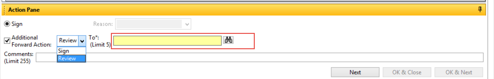
- Select Next if you wish to bypass the document until later. Once you fill out all the required fields, OK & Close and OK & Next will be available to select. If you do not select Additional Forward Actions the OK & Close and OK & Next will be bolded and available options to choose.
| Need Support? Contact your Clinical Informatics Team Hospital Team: ClinicalInformaticshospitals@sjmc.org and 918-744-3088 (Mon-Fri) AMG Clinic Team: OKTUL-DL-SJCAmbulatoryClinicalInformatics@ascension.org |
© Ascension 2022. All Rights Reserved.